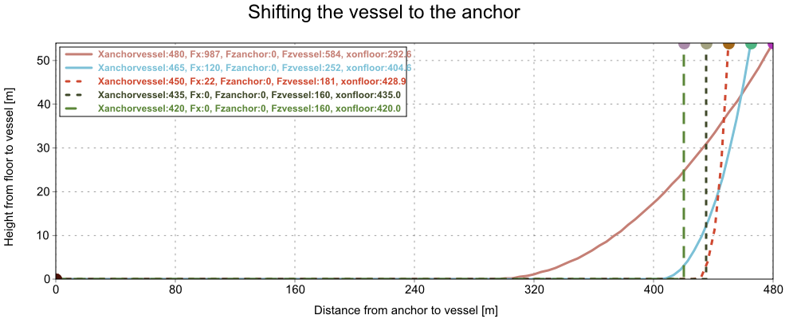
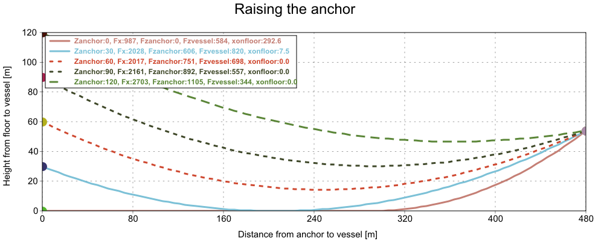
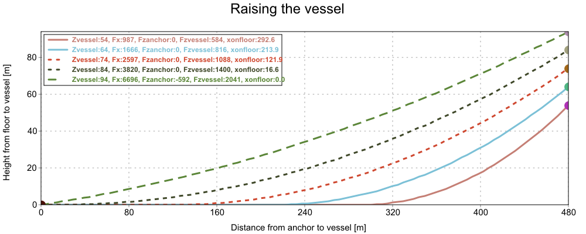

|
Catenary functions for single mooring line calculations considering sagging and sea bottom.



enum MooringStatus LOOSE_ON_FLOOR
Mooring is loose on the floor without horizontal tension.
enum MooringStatus CATENARY_ON_FLOOR
Mooring is in catenary shape with part of the line horizontal laying on the floor (touchdown).
enum MooringStatus CATENARY
Mooring is in catenary shape and no part of it touches the ground.
enum MooringStatus BROKEN
Mooring is broken because the distance between ends is longer than line length
enum MooringStatus BL_EXCEDEED
Mooring is broken because breaking load has been exceeded.
MooringStatus Catenary(double rho_m, double rho_m3, double rho_water, double moorlen, double BL, double xanchorvessel, double zanchor, double zvessel, double &Fhanchorvessel, double &Fvanchor, double &Fvvessel, double &xonfloor, Vector<double> &x, Vector<double> &z, int num)
Based on a mooring line with dry density per meter rho_m [kg/m], dry volumetric density rho_m3 [kg/m3], water density rho_water [kg/m3], length of mooring moorlen [m], breaking load BL, horizontal distance between anchor and vessel fairlead xanchorvessel, positive vertical distance between floor and anchor zanchor [m], positive vertical distance between floor and vessel fairlead zvessel [m],
returns the horizontal force between anchor and vessel fairlead Fhanchorvessel [N], vertical force applied to anchor, Fvanchor [N], vertical force applied to vessel fairlead Fvvessel [N], length of the mooring line that is lying on the floor, from anchor to touchdown, xonfloor, horizontal x and vertical z vectors with num elements showing mooring line shape. It also returns MooringStatus. Breaking load BL [N] can be set to Null if it is unknown.
MooringStatus Catenary(double rho_m, double rho_m3, double rho_water, double moorlen, double BL, double xanchorvessel, double zanchor, double zvessel, double &Fhanchorvessel, double &Fvanchor, double &Fvvessel, double &xonfloor)
Based on a mooring line with dry density per meter rho_m [kg/m], dry volumetric density rho_m3 [kg/m3], water density rho_water [kg/m3], length of mooring moorlen [m], breaking load BL, horizontal distance between anchor and vessel fairlead xanchorvessel [m], positive vertical distance between floor and anchor zanchor [m], positive vertical distance between floor and vessel fairlead zvessel [m],
returns the horizontal force between anchor and vessel fairlead Fhanchorvessel [N], vertical force applied to anchor, Fvanchor [N], vertical force applied to vessel fairlead Fvvessel [N], the length of the mooring line that is lying on the floor, from anchor to touchdown, xonfloor [m]. It also returns MooringStatus. Breaking load BL [N] can be set to Null if it is unknown.
MooringStatus Catenary(double moorlen, double xanchorvessel, double zanchor, double zvessel, double &xonfloor, Vector<double> &x, Vector<double> &z, int num)
Based on a mooring line with length of mooring moorlen [m], horizontal distance between anchor and vessel fairlead xanchorvessel [m], positive vertical distance between floor and anchor zanchor [m], positive vertical distance between floor and vessel fairlead zvessel [m],
returns the length of the mooring line that is lying on the floor, from anchor to touchdown, xonfloor [m], horizontal x and vertical z vectors with num elements showing mooring line shape. It also returns MooringStatus.
MooringStatus Catenary(double moorlen, double xanchorvessel, double zanchor, double zvessel, double &xonfloor)
Based on a mooring line with length of mooring moorlen [m], horizontal distance between anchor and vessel fairlead xanchorvessel [m], positive vertical distance between floor and anchor zanchor [m], positive vertical distance between floor and vessel fairlead zvessel [m],
returns the length of the mooring line that is lying on the floor, from anchor to touchdown, xonfloor [m]. It also returns MooringStatus.
MooringStatus CatenaryGetLen(double xonfloor, double xanchorvessel, double zanchor, double zvessel, double &moorlen)
Based on a mooring line, with a length of the mooring line that is lying on the floor, from anchor to touchdown, xonfloor [m], horizontal distance between anchor and vessel fairlead xanchorvessel [m], positive vertical distance between floor and anchor zanchor [m], positive vertical distance between floor and vessel fairlead zvessel [m],
returns the horizontal force between anchor and vessel fairlead Fhanchorvessel [N], vertical force applied to anchor, Fvanchor [N], vertical force applied to vessel fairlead Fvvessel [N], and the length of the mooring line moorlen [m]. It also returns MooringStatus.
MooringStatus CatenaryGetLen(double xonfloor, double xanchorvessel, double zanchor, double zvessel, double Fhanchorvessel, double Fvanchor, double Fvvessel, double &moorlen)
Based on a mooring line, with a length of the mooring line that is lying on the floor, from anchor to touchdown, xonfloor [m], horizontal distance between anchor and vessel fairlead xanchorvessel [m], positive vertical distance between floor and anchor zanchor [m], positive vertical distance between floor and vessel fairlead zvessel [m],
returns the length of the mooring line moorlen [m]. It also returns MooringStatus.
const char *MooringStatusStr(MooringStatus status)
Returns the String defining the status.
bool IsOK(MooringStatus status)
Returns true if the mooring status is not broken.
|
{kind=link}
{kind=link}
{kind=link}